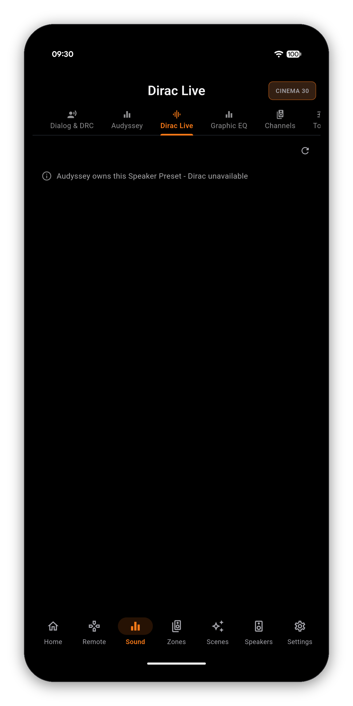
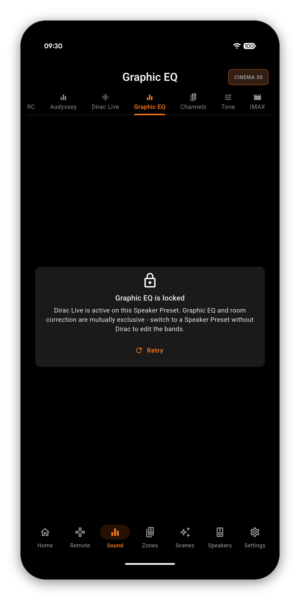
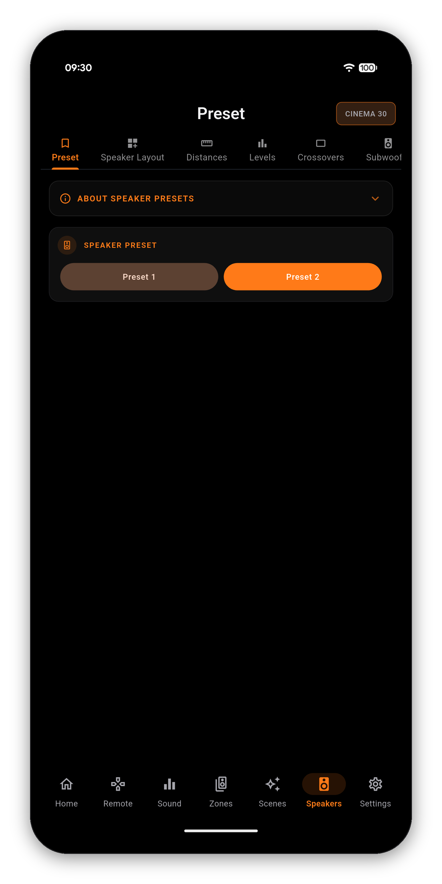

Sooner or later you will open a page and find it will not let you edit anything. It is almost never a bug and it is never the app being cautious: your receiver locks these menus itself, and it locks a different set depending on which system calibrated the Speaker Preset you are on. This page is the whole map.
Modern Denon and Marantz receivers store two Speaker Presets, and each one is a complete snapshot: layout, distances, levels, crossovers, and the room correction that measured them. A preset is calibrated by Audyssey or by Dirac Live. Never both.
That is why the two pages mirror each other. On a preset carrying a Dirac filter, the Audyssey page has nothing to show. On a preset calibrated by Audyssey, the Dirac page has nothing to show. In both cases AVR Maestro prints which system owns the preset instead of leaving you staring at an empty screen.


| Page | Locked when | To unlock |
|---|---|---|
| Speaker Layout | A Dirac filter is active on this preset | Switch Speaker Preset |
| Distances | A Dirac filter is active on this preset | Switch Speaker Preset |
| Levels | A Dirac filter is active on this preset | Switch Speaker Preset |
| Crossovers | A Dirac filter is active on this preset | Switch Speaker Preset |
| Subwoofer Output | A Dirac filter is active on this preset | Switch Speaker Preset |
| Audyssey | Dirac owns this preset | Switch to the Audyssey preset |
| Dirac Live | Audyssey owns this preset | Switch to the Dirac preset |
| Graphic EQ | Either Dirac or Audyssey MultEQ is running | Switch preset, or set MultEQ to Off |
| Tone, Bass, Treble | Audyssey Dynamic EQ is on | Turn Dynamic EQ off |
| LFE Distribution | No speaker is set to Full Range | Set a speaker to Full Range in Crossovers |
| Dynamic Range Compression | The source is not a Dolby bitstream | Play Dolby content |
The Graphic EQ is the clearest case of why a generic "this is unavailable" message is not good enough. Your receiver runs room correction or the manual EQ, never both - but there are two different room-correction systems that can be holding it, and the fix is different for each. So AVR Maestro names the one that is actually running.


Once it is free, the toggle at the top turns the EQ on and the nine bands become editable. Full Graphic EQ guide →
The layout, distances, levels and crossovers all reload for that preset, and everything Dirac was holding becomes editable. Your Dirac calibration is stored on its own preset and is not touched by switching away from it - switch back and it is exactly as you left it.

Getting started · Home Screen · Scenes · Custom Icons · Sound · Graphic EQ · Speakers · The Assistant · Home Automation · Home Assistant dashboard · Zones · Remote · Radio (FM/AM) · On-Screen Display · Settings · Languages · Volume Controls · Backup & Restore · Now Playing & HEOS
One-time purchase, no ads, no subscriptions. Connect in under a minute.